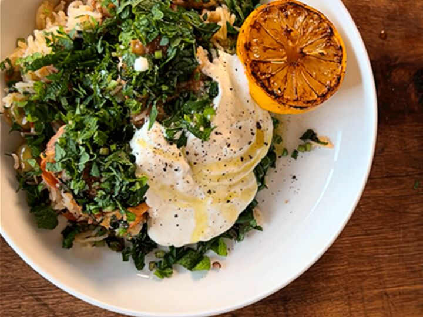

Chicken Rice with Garlic Yoghurt and Burnt Lemon

Ingredients
- 1 whole chicken
- 3 shallots
6 garlic cloves
- 500g cherry tomatoes
- 400g green olives
- 1tsp fennel seeds
- 1 tsp black pepper
- 2 star anise
- 1 cinnamon stick
- 200g basmati rice
- 600ml chicken stock
- 2 lemons
- 250g yoghurt
- 1 garlic clove
- 1/2 juiced lemon
Steps
- Preheat the oven to 200 degrees.
- Debone and salt the chicken.
- Heat a pan with olive oil, fry chicken until golden, and set aside.
- Cook shallots, then add garlic, tomatoes, spices, and olives.
- Add rice and chicken stock, bake at 200 degrees for 35 minutes.
- Remove from oven and rest for 10 minutes with the lid on.
- Make dressing with yogurt, garlic, olive oil, and lemon juice.
- Caramelize 4 lemon halves in a hot pan.
- Garnish chicken with herbs, yogurt dressing, and burnt lemons.
Full video recipe: